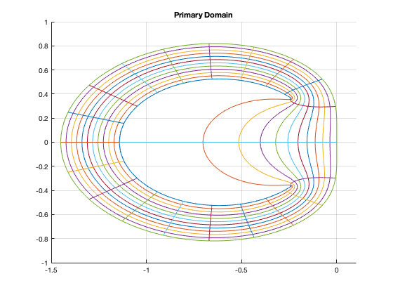
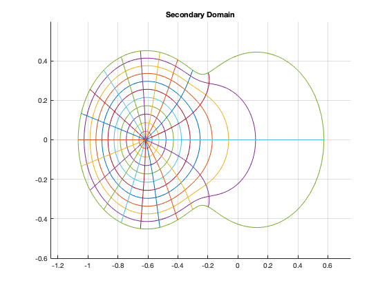
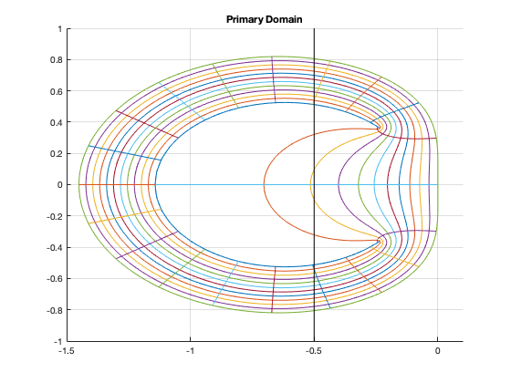

Contents
clc; close all;
PARTC
num = [0 1.27 -0.73];
den = [1 -1.45 0.45];
Hp = tf(num, den)
zeros = roots(num)
poles = roots(den)
Phi = tf(den, num)
newNum = [12700 -14600 4870]
badPoints = roots(newNum)
magnitude = abs(badPoints)
Nt=21;
Nr=12;
theta=linspace(0,2*pi,1001);
rho=linspace(0.6192,1,1001);
tvec=linspace(0,2*pi,Nt);
rvec=linspace(0.6192,1,Nr);
temp = (roots(den - num*0.5748));
mag = abs(temp)
ang = angle(temp)
for k=1:length(rvec)
z=rvec(k)*exp(i*theta);
w=(z.^2-z.*1.45 + 0.45)./(z.*1.27-0.73);
hold on
plot(real(w), imag(w))
hold off
end
for k=1:length(tvec)-1
z=rho*exp(i*tvec(k));
w=(z.^2-z.*1.45 + 0.45)./(z.*1.27-0.73);
hold on
plot(real(w), imag(w))
hold off
end
grid on
axis([-1.5 0.1 -1 1])
title('Primary Domain')
Hp =
1.27 s - 0.73
-------------------
s^2 - 1.45 s + 0.45
Continuous-time transfer function.
zeros =
0.5748
poles =
1.0000
0.4500
Phi =
s^2 - 1.45 s + 0.45
-------------------
1.27 s - 0.73
Continuous-time transfer function.
newNum =
12700 -14600 4870
badPoints =
0.5748 + 0.2304i
0.5748 - 0.2304i
magnitude =
0.6192
0.6192
mag =
1.6543
0.5256
ang =
0
0

PART D
figure;
Nt=21;
Nr=12;
theta=linspace(0,2*pi,1001);
rho=linspace(0,0.5256,1001);
tvec=linspace(0,2*pi,Nt);
rvec=linspace(0,0.5256,Nr);
for k=1:length(rvec)
z=rvec(k)*exp(i*theta);
w=(z.^2-z.*1.45 + 0.45)./(z.*1.27-0.73);
hold on
plot(real(w), imag(w))
hold off
end
for k=1:length(tvec)-1
z=rho*exp(i*tvec(k));
w=(z.^2-z.*1.45 + 0.45)./(z.*1.27-0.73);
hold on
plot(real(w), imag(w))
hold off
end
grid on
axis([-1.25 0.75 -0.6 0.6])
title('Secondary Domain')

PART E -- Stability Region
disp('Stable and Accurate Region is inside of the green outlining edge, to the right of the black line in Figure 3')
disp('Stable and Inaccurate Region is inside of the green outlining edge, to the left of the black line in Figure 3')
disp('Unstable and Inaccurate Region is outside of the green outlining edge on the primary region plot')
figure;
Nt=21;
Nr=12;
theta=linspace(0,2*pi,1001);
rho=linspace(0.6192,1,1001);
tvec=linspace(0,2*pi,Nt);
rvec=linspace(0.6192,1,Nr);
for k=1:length(rvec)
z=rvec(k)*exp(i*theta);
w=(z.^2-z.*1.45 + 0.45)./(z.*1.27-0.73);
hold on
plot(real(w), imag(w))
hold off
end
for k=1:length(tvec)-1
z=rho*exp(i*tvec(k));
w=(z.^2-z.*1.45 + 0.45)./(z.*1.27-0.73);
hold on
plot(real(w), imag(w))
hold off
end
hold on
plot([-0.5 -0.5], [-1 1], 'black')
hold off
grid on
axis([-1.5 0.1 -1 1])
title('Primary Domain')
Stable and Accurate Region is inside of the green outlining edge, to the right of the black line in Figure 3
Stable and Inaccurate Region is inside of the green outlining edge, to the left of the black line in Figure 3
Unstable and Inaccurate Region is outside of the green outlining edge on the primary region plot
